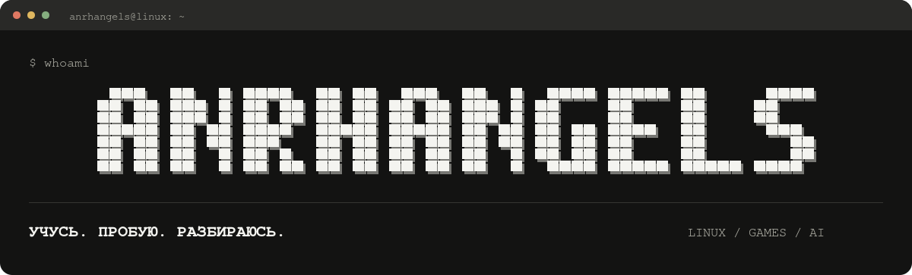
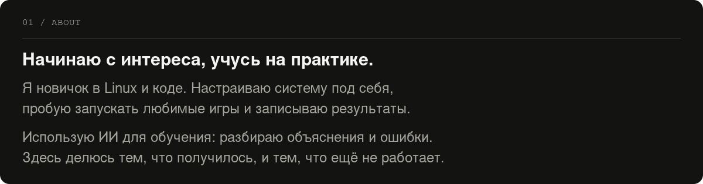
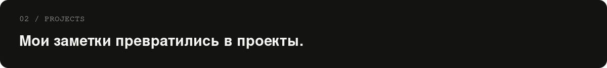
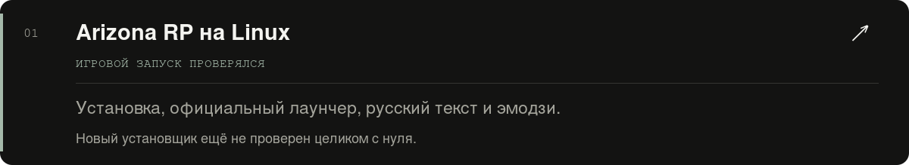
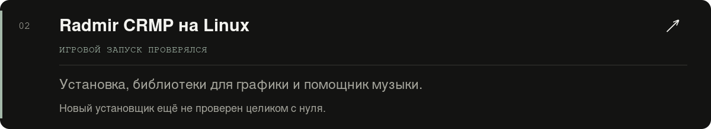
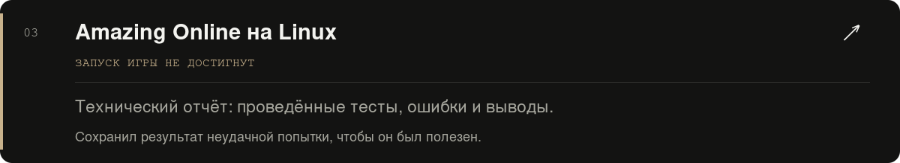

<!doctype html><html lang="ru"><meta charset="utf-8"><meta name="viewport" content="width=device-width,initial-scale=1"><title>anrhangels — предпросмотр профиля</title><style>body{margin:0;background:#0d1117;color:#c9d1d9;font:16px system-ui}main{max-width:900px;margin:40px auto;padding:24px;border:1px solid #30363d;border-radius:12px}img{display:block;width:100%;height:auto;margin:16px 0}a{color:#c9d1d9}nav{text-align:center;padding:8px}footer{text-align:center;font-size:12px;line-height:1.7;padding:20px}</style><main>
<nav>Проекты · Обо мне · Связаться</nav>


<a href="https://github.com/anrhangels/linux-arizona-rp"></a>
<a href="https://github.com/anrhangels/linux-radmir-rp"></a>
<a href="https://github.com/anrhangels/linux-amazing-rp"></a>

<footer>Работа велась с помощью ИИ — OpenAI Codex GPT-6.1-Sol.<br>Локальный предпросмотр; отступы GitHub могут отличаться.</footer></main></html>